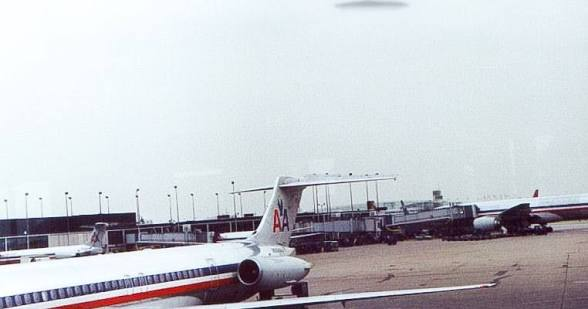

The Chicago O'Hare UFO sighting occurred when 12 United Airlines employees and a few witnesses outside O'Hare International Airport reported a sudden UFO sighting. The Federal Aviation Administration refused to investigate the matter because this unidentified flying object (UFO) was not seen on radar, instead calling it a "weather phenomenon".

Witnesses described the object as completely silent, 1.8 to 7.3m in size and dark gray in color. Several independent witnesses outside of the airport also saw the object. One described a disc-shaped craft hovering over the airport, stating that it was obviously not clouds. According to this witness, the object shot through the clouds at high velocity, leaving a clear blue hole in the cloud layer. The hole reportedly seemed to close itself shortly afterward. At least four of the witnesses don't agree on the shape, height, movement, time, or even the number of objects sighted.
In my opinion, no. I think it's weird that the Federal Aviation Administration refused to investigate--even if it was in fact a weather phenomenon, they still should've investigated because they don't know what caused it, which is why I think it's a cover up. However, the fact that four witnesses didn't see the same thing makes it a little unbelievable.
But there is theories for what might have happened in the Hill Abduction that say aliens can mess up their memory, maybe a similar thing happened in this case.